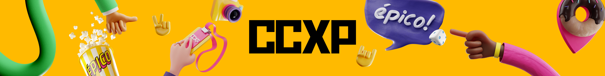
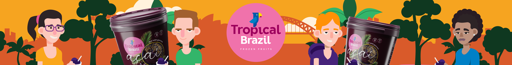
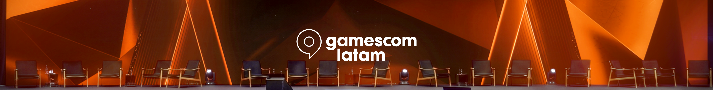
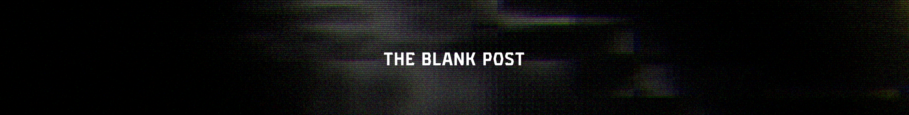
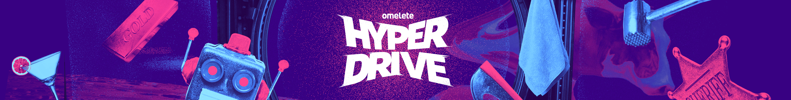
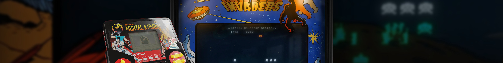

Hi, I'm Eduardo Terrataca, a creative professional focused on creating videos, I seek excellence in craft, utilizing technology and expertise to spend less time on repetitive tasks and more time experimenting and creating.
WHAT I DO
I work with brands, studios and agencies, big and small, on a broad range of design services, such as:
ART DIRECTION
From concept sketches to final stylistic execution across all touchpoints.
MOTION DESIGN
Create purposeful movement that communicates ideas instantly.
VIDEO EDITING
Material selection, color grading, choose an edit pacing that fits the story.
3D DESIGN
Modeling, texturing and lighting environments and products.
SOUND DESIGN
Enhancing visuals with appropriate soundscapes and audio mixing.
AND GENERATIVE AI?
I've been studying generative AI since 2022. I started with demanding local models and moved to online models in search of speed and variety.
But the fact is: technology changes, while creative direction is permanent. Without a clear vision, AI only generates randomness. It is human curation, intention and strategy that bring cohesion, ensuring that every deliverable aligns with the brand identity and the project's narrative.

WORK FEATURED
AROUND THE WORLD
Working remotely, I've had the opportunity to participate on projects around the world. I also sell assets in stock libraries, where they're used by people globally. Knowing that my work reaches people worldwide makes me very proud.
SHOWCASE






A small selection can’t fully capture 20 years of work. If you’d like to see more, feel free to check out my social media.
SOCIALS
TOOLS
Tools come and go, so I'm constantly exploring new tools to improve my work, but these are the ones that I use most often:
EXPERIENCE
BRANDS
Here's a selection of brands I've had the opportunity of working with:
TERRA.WORK
Jan 2018 - PresentAs a freelancer, I work on projects for leading companies, studios, and agencies, including Puravida, Nestlé Health Science, Omelete, CCXP, Gamescom, Africa, Cappuccino, E/OR MRM, McKinsey & Company. Focused on motion-driven digital work, I also develop 3D assets, visual systems, and illustration to support broader creative direction.
REF+
Sep 2016 - Mar 2020I worked as a Motion Designer, producing content across a wide range of media, including social platforms, digital advertising (banners, bumpers, TrueView ads), out-of-home (OOH), and broadcast TV. I also contributed 3D assets for art direction, and worked on video and audio editing.
SAPIENT NITRO
Jan 2013 - Jul 2016SapientNitro is now part of the Publicis Group and currently operates in the Brazilian market as SapientAG2. As part of a multinational organization, I collaborated with international clients, creating across multiple formats, from digital and social to broadcast and OOH, UX prototypes, digital advertisements, assets for commercials and pitch content.
OTHER EXPERIENCES
Before 2013In addition to the roles listed above, I also worked with other studios and agencies. I began my career as an Art Director and gradually transitioned into Motion Design, occasionally taking on responsibilities in Flash and HTML development, as well as final artwork production, areas that are no longer part of my current focus.
HONORS
& AWARDS
Throughout my career, I've collaborated with highly talented creatives, exchanging knowledge and contributing to collaborative environments that led to award-winning work.
THE BLANK POST
Associated with Daniel Portuga as a Motion DesignerW3 Awards NY - Silver / W3 Awards NY Social Content & Marketing - Best in Show / Creativepool Annual - Shortlist / Anthem Awards - Bronze / Webby Awards - Official Honoree
NAPSTER - THE ROCK'S DAY
At SapientNitro as one of the Art DirectorsLusos Awards / Shotlist
PHILADELPHIA - PIZZA ROULETTE
At SapientNitro as a Motion Designer.Lusos Awards - Digital - Bronze / Lusos Awards - Social Media - Shortlist / Creativity International Media Awards - Silver / W3 Awards NY - Gold
PHILADELPHIA - THE SOCIAL CHEESECAKE
At SapientNitro as a Motion Designer.Lusos Awards - Best of Media - Gold / Lusos Awards - Digital - Bronze / Communicator Awards - Award of Excellence / Internet Advertising Competition - Best Food Social Media Campaign
VIVO - POST-SHIRT
At iThink as a Motion Designer and Art Director.Pororoca – Best Innovation Initiative – Bronze
SANTANDER - CONEXOES DE IDEIAS
At iThink as a Motion Designer and Video Editor.Premio Aberje 2011 - Midia Digital - Shortlist
TELEFONICA - ULTIMATE ID CHAMPIONSHIP
At iThink as a Motion Designer and Art Director.Wave Festival - Shortlist / El Ojo - Bronze / Clube de Criação (CCSP) - Silver
PERSONAL PORTFOLIO
As a Motion Designer, Art Director and Flash Developer.SF Art & Design Portal - Featured Site